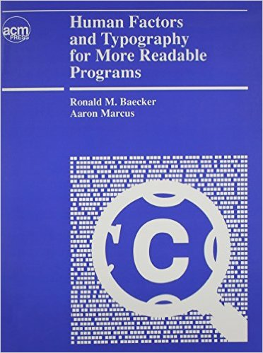
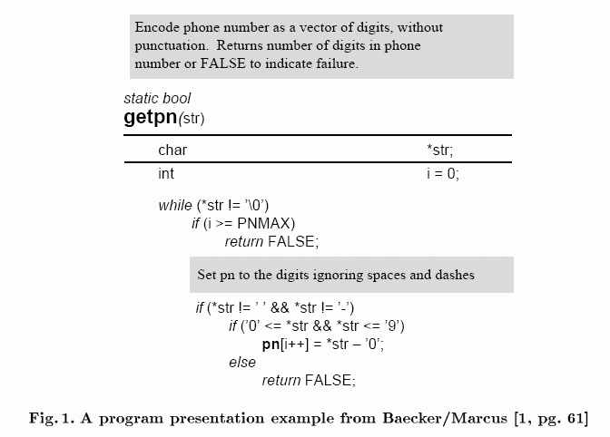

# making your JavaScript debuggable Patrick Mueller [`@pmuellr`](https://twitter.com/pmuellr), [`muellerware.org`](http://muellerware.org)<br> senior node engineer at [NodeSource](https://nodesource.com)<br> <div class="smaller"><div class="smaller"><div class="smaller"> <a href="https://www.youtube.com/watch?v=msVR235vIOM&ab_channel=Nodevember">YouTube video</a> <br> <a href="http://pmuellr.github.io/slides/2015/11-debuggable-javascript"> http://pmuellr.github.io/slides/2015/11-debuggable-javascript </a> <br> <a href="http://pmuellr.github.io/slides/2015/11-debuggable-javascript/slides.pdf"> http://pmuellr.github.io/slides/2015/11-debuggable-javascript/slides.pdf </a> <br> <a href="http://pmuellr.github.io/slides/"> http://pmuellr.github.io/slides/ </a> (all of Patrick's slides) </div></div></div> <style> .nodevember-logo { padding: 0.2em; background-color: #00936b; } </style> <div class="toolBar no-print"> <div class="navHelp" title="use the cursor keys to navigate, 'n' to toggle nav buttons, 's' to toggle control panel"> <img class="button-1st" height=16 src="../../glyphicons_free/glyphicons/png/glyphicons_171_fast_backward.png"> <img class="button-prev" height=16 src="../../glyphicons_free/glyphicons/png/glyphicons_172_rewind.png"> <img class="button-next" height=16 src="../../glyphicons_free/glyphicons/png/glyphicons_176_forward.png"> </div> <div> </div> <div class="controlPanel" title="'s' to toggle control panel"> <img class="button-clicker" height=16 src="../../glyphicons_free/glyphicons/png/glyphicons_027_search.png" title="use clicker"> <img class="button-hd" height=16 src="../../glyphicons_free/glyphicons/png/glyphicons_391_video_hd.png" title="toggle HD"> </div> </div> --- layout: true <div class="page-context"> <span class="smaller"><span class="smaller"><span class="smaller"> <tt></tt> </span></span></span> </div> <div class="page-icon"> <span class="smaller"><span class="smaller"><span class="smaller"> <tt>making your JavaScript debuggable</tt> </span></span></span> </div> {{content}} <div class="toolBar no-print"> <div class="navHelp" title="use the cursor keys to navigate, 'n' to toggle nav buttons, 's' to toggle control panel"> <img class="button-1st" height=16 src="../../glyphicons_free/glyphicons/png/glyphicons_171_fast_backward.png"> <img class="button-prev" height=16 src="../../glyphicons_free/glyphicons/png/glyphicons_172_rewind.png"> <img class="button-next" height=16 src="../../glyphicons_free/glyphicons/png/glyphicons_176_forward.png"> </div> <div> </div> <div class="controlPanel" title="'s' to toggle control panel"> <img class="button-clicker" height=16 src="../../glyphicons_free/glyphicons/png/glyphicons_027_search.png" title="use clicker"> <img class="button-hd" height=16 src="../../glyphicons_free/glyphicons/png/glyphicons_391_video_hd.png" title="toggle HD"> </div> </div> --- class: center, middle # code reading --- layout: true <div class="page-context"> <span class="smaller"><span class="smaller"><span class="smaller"> <tt>code reading</tt> </span></span></span> </div> <div class="page-icon"> <span class="smaller"><span class="smaller"><span class="smaller"> <tt>making your JavaScript debuggable</tt> </span></span></span> </div> {{content}} <div class="toolBar no-print"> <div class="navHelp" title="use the cursor keys to navigate, 'n' to toggle nav buttons, 's' to toggle control panel"> <img class="button-1st" height=16 src="../../glyphicons_free/glyphicons/png/glyphicons_171_fast_backward.png"> <img class="button-prev" height=16 src="../../glyphicons_free/glyphicons/png/glyphicons_172_rewind.png"> <img class="button-next" height=16 src="../../glyphicons_free/glyphicons/png/glyphicons_176_forward.png"> </div> <div> </div> <div class="controlPanel" title="'s' to toggle control panel"> <img class="button-clicker" height=16 src="../../glyphicons_free/glyphicons/png/glyphicons_027_search.png" title="use clicker"> <img class="button-hd" height=16 src="../../glyphicons_free/glyphicons/png/glyphicons_391_video_hd.png" title="toggle HD"> </div> </div> --- class: left, middle > I'm doing 90% maintenance and 10% development, is this normal? [Stack Overflow ](http://programmers.stackexchange.com/questions/152464/im-doing-90-maintenance-and-10-development-is-this-normal) > In 2001, more than 50% of the global software population is engaged in modifying existing applications rather than writing new applications. [Capers Jones](http://www.compaid.com/caiinternet/ezine/capersjones-maintenance.pdf) --- class: center, middle # you will write a little code # you will read a lot of code # optimize for readability --- ## pyramid of doom ```js //!snippet: pyramid-of-doom.js ``` --- ## pyramid of doom fixed - 1 ```js //!snippet: pyramid-of-doom-fixed-1.js ``` --- ## pyramid of doom fixed - 2 ```js //!snippet: pyramid-of-doom-fixed-2.js ``` --- ## pyramid of doom - unnamed functions! ```js //!snippet: pyramid-of-doom-err.js ``` --- ## pyramid of doom - unnamed functions fixed! ```js //!snippet: pyramid-of-doom-err-fixed.js ``` --- ## pyramid of doom - see also * [async - npm](https://www.npmjs.com/package/async) - Caolan McMahon * [Promises](http://exploringjs.com/es6/ch_promises.html) - Axel Rauschmayer --- ## linting and code style - [standard](http://npmjs.org/package/standard) ```text $ node_modules/.bin/standard standard: Use JavaScript Standard Style (https://github.com/feross/standard) path/to/bole.js:1:22: Strings must use singlequote. path/to/bole.js:3:18: Strings must use singlequote. ... (it never ends) ``` > No decisions to make. No .eslintrc, .jshintrc, or .jscsrc files to manage. It just works. --- ## other things * keep functions shorter than a "page"; v8 will "inline" short functions! * one-line arrow functions - no return or braces needed! ```js [ 1, 4, 9 ].map(x => Math.sqrt(x)) // [ 1, 2, 3 ] ``` * lots of great general ideas in [Code Complete](http://www.amazon.com/Code-Complete-Practical-Handbook-Construction/dp/0735619670) --- layout: true <div class="page-context"> <span class="smaller"><span class="smaller"><span class="smaller"> <tt></tt> </span></span></span> </div> <div class="page-icon"> <span class="smaller"><span class="smaller"><span class="smaller"> <tt>making your JavaScript debuggable</tt> </span></span></span> </div> {{content}} <div class="toolBar no-print"> <div class="navHelp" title="use the cursor keys to navigate, 'n' to toggle nav buttons, 's' to toggle control panel"> <img class="button-1st" height=16 src="../../glyphicons_free/glyphicons/png/glyphicons_171_fast_backward.png"> <img class="button-prev" height=16 src="../../glyphicons_free/glyphicons/png/glyphicons_172_rewind.png"> <img class="button-next" height=16 src="../../glyphicons_free/glyphicons/png/glyphicons_176_forward.png"> </div> <div> </div> <div class="controlPanel" title="'s' to toggle control panel"> <img class="button-clicker" height=16 src="../../glyphicons_free/glyphicons/png/glyphicons_027_search.png" title="use clicker"> <img class="button-hd" height=16 src="../../glyphicons_free/glyphicons/png/glyphicons_391_video_hd.png" title="toggle HD"> </div> </div> --- class: center, middle # logging --- layout: true <div class="page-context"> <span class="smaller"><span class="smaller"><span class="smaller"> <tt>logging</tt> </span></span></span> </div> <div class="page-icon"> <span class="smaller"><span class="smaller"><span class="smaller"> <tt>making your JavaScript debuggable</tt> </span></span></span> </div> {{content}} <div class="toolBar no-print"> <div class="navHelp" title="use the cursor keys to navigate, 'n' to toggle nav buttons, 's' to toggle control panel"> <img class="button-1st" height=16 src="../../glyphicons_free/glyphicons/png/glyphicons_171_fast_backward.png"> <img class="button-prev" height=16 src="../../glyphicons_free/glyphicons/png/glyphicons_172_rewind.png"> <img class="button-next" height=16 src="../../glyphicons_free/glyphicons/png/glyphicons_176_forward.png"> </div> <div> </div> <div class="controlPanel" title="'s' to toggle control panel"> <img class="button-clicker" height=16 src="../../glyphicons_free/glyphicons/png/glyphicons_027_search.png" title="use clicker"> <img class="button-hd" height=16 src="../../glyphicons_free/glyphicons/png/glyphicons_391_video_hd.png" title="toggle HD"> </div> </div> --- class: left, middle > The most effective debugging tool is still careful thought, coupled with judiciously placed print statements. [Brian W. Kernighan](http://www.mtholyoke.edu/~mcrowley/beginners.pdf) --- ## [`console.log()`](https://nodejs.org/api/console.html) ```js //!snippet: console_log.js ``` --- ## [`console.time()`](https://nodejs.org/api/console.html) ```js //!snippet: console_time.js ``` --- ## [`console.trace()`](https://nodejs.org/api/console.html) ```js //!snippet: console_trace.js ``` --- ## [`console.table()???`](https://developer.mozilla.org/en-US/docs/Web/API/Console/table) ```js //!snippet: console_table.js ``` --- class: center, middle # logging that stays in your code --- ## [npm `debug`](https://npmjs.org/package/debug) ```js //!snippet: debug.js ``` <pre><code>$ DEBUG=* node debug.js <span style="color:#0A0">thing-B</span> churning <span style="color:#0A0">+0ms</span> <span style="color:#00A">thing-A</span> thrashing <span style="color:#00A">+0ms</span> <span style="color:#0A0">thing-B</span> churning <span style="color:#0A0">+339ms</span> <span style="color:#00A">thing-A</span> thrashing <span style="color:#00A">+501ms</span> ... </code></pre> --- ## [npm `winston`](https://npmjs.org/package/winston) ```js //!snippet: winston.js ``` --- ## [npm `bunyan`](https://npmjs.org/package/bunyan) ```js //!snippet: bunyan.js ``` --- ## [npm `bole`](https://npmjs.org/package/bole) ```js //!snippet: bole.js ``` --- ## [npm `hooker`](https://www.npmjs.com/package/hooker) ```js //!snippet: hooker.js ``` --- ## [npm `hooker`](https://github.com/cowboy/javascript-hooker) prints: ``` -> Math.max: [5,6,7] <- Math.max: 7 -> Math.sqrt: [2] <- Math.sqrt: 1.4142135623730951 ``` also provides * filtering arguments * overriding results --- layout: true <div class="page-context"> <span class="smaller"><span class="smaller"><span class="smaller"> <tt></tt> </span></span></span> </div> <div class="page-icon"> <span class="smaller"><span class="smaller"><span class="smaller"> <tt>making your JavaScript debuggable</tt> </span></span></span> </div> {{content}} <div class="toolBar no-print"> <div class="navHelp" title="use the cursor keys to navigate, 'n' to toggle nav buttons, 's' to toggle control panel"> <img class="button-1st" height=16 src="../../glyphicons_free/glyphicons/png/glyphicons_171_fast_backward.png"> <img class="button-prev" height=16 src="../../glyphicons_free/glyphicons/png/glyphicons_172_rewind.png"> <img class="button-next" height=16 src="../../glyphicons_free/glyphicons/png/glyphicons_176_forward.png"> </div> <div> </div> <div class="controlPanel" title="'s' to toggle control panel"> <img class="button-clicker" height=16 src="../../glyphicons_free/glyphicons/png/glyphicons_027_search.png" title="use clicker"> <img class="button-hd" height=16 src="../../glyphicons_free/glyphicons/png/glyphicons_391_video_hd.png" title="toggle HD"> </div> </div> --- class: center, middle # error handling --- layout: true <div class="page-context"> <span class="smaller"><span class="smaller"><span class="smaller"> <tt>error handling</tt> </span></span></span> </div> <div class="page-icon"> <span class="smaller"><span class="smaller"><span class="smaller"> <tt>making your JavaScript debuggable</tt> </span></span></span> </div> {{content}} <div class="toolBar no-print"> <div class="navHelp" title="use the cursor keys to navigate, 'n' to toggle nav buttons, 's' to toggle control panel"> <img class="button-1st" height=16 src="../../glyphicons_free/glyphicons/png/glyphicons_171_fast_backward.png"> <img class="button-prev" height=16 src="../../glyphicons_free/glyphicons/png/glyphicons_172_rewind.png"> <img class="button-next" height=16 src="../../glyphicons_free/glyphicons/png/glyphicons_176_forward.png"> </div> <div> </div> <div class="controlPanel" title="'s' to toggle control panel"> <img class="button-clicker" height=16 src="../../glyphicons_free/glyphicons/png/glyphicons_027_search.png" title="use clicker"> <img class="button-hd" height=16 src="../../glyphicons_free/glyphicons/png/glyphicons_391_video_hd.png" title="toggle HD"> </div> </div> --- ## builtin [`process` events](https://nodejs.org/api/process.html#process_event_exit) ```js //!snippet: process-events.js ``` --- ### `Error.prepareStackTrace()` - before ```js //!snippet: v8_prepareStackTrace-before.js ``` --- ### `Error.prepareStackTrace()` - after ```js //!snippet: v8_prepareStackTrace-after.js ``` --- ### `Error.prepareStackTrace = ...` ```js function v8PrepareStackTrace(error, callSites) { for (let callSite of callSites) { const funcName = callSite.getFunctionName() const file = callSite.getFileName() const line = callSite.getLineNumber() ... } return outputString } ``` reference: [javascript_stack_trace_api.md](https://chromium.googlesource.com/v8/v8/+/master/docs/javascript_stack_trace_api.md) --- ### [npm `longjohn`](https://www.npmjs.com/package/longjohn) - before ```js //!snippet: long-stack-traces-before.js ``` --- ### [npm `longjohn`](https://www.npmjs.com/package/longjohn) - after ```js //!snippet: long-stack-traces-after.js ``` --- layout: true <div class="page-context"> <span class="smaller"><span class="smaller"><span class="smaller"> <tt></tt> </span></span></span> </div> <div class="page-icon"> <span class="smaller"><span class="smaller"><span class="smaller"> <tt>making your JavaScript debuggable</tt> </span></span></span> </div> {{content}} <div class="toolBar no-print"> <div class="navHelp" title="use the cursor keys to navigate, 'n' to toggle nav buttons, 's' to toggle control panel"> <img class="button-1st" height=16 src="../../glyphicons_free/glyphicons/png/glyphicons_171_fast_backward.png"> <img class="button-prev" height=16 src="../../glyphicons_free/glyphicons/png/glyphicons_172_rewind.png"> <img class="button-next" height=16 src="../../glyphicons_free/glyphicons/png/glyphicons_176_forward.png"> </div> <div> </div> <div class="controlPanel" title="'s' to toggle control panel"> <img class="button-clicker" height=16 src="../../glyphicons_free/glyphicons/png/glyphicons_027_search.png" title="use clicker"> <img class="button-hd" height=16 src="../../glyphicons_free/glyphicons/png/glyphicons_391_video_hd.png" title="toggle HD"> </div> </div> --- class: center, middle # actual debugging --- layout: true <div class="page-context"> <span class="smaller"><span class="smaller"><span class="smaller"> <tt>actual debugging</tt> </span></span></span> </div> <div class="page-icon"> <span class="smaller"><span class="smaller"><span class="smaller"> <tt>making your JavaScript debuggable</tt> </span></span></span> </div> {{content}} <div class="toolBar no-print"> <div class="navHelp" title="use the cursor keys to navigate, 'n' to toggle nav buttons, 's' to toggle control panel"> <img class="button-1st" height=16 src="../../glyphicons_free/glyphicons/png/glyphicons_171_fast_backward.png"> <img class="button-prev" height=16 src="../../glyphicons_free/glyphicons/png/glyphicons_172_rewind.png"> <img class="button-next" height=16 src="../../glyphicons_free/glyphicons/png/glyphicons_176_forward.png"> </div> <div> </div> <div class="controlPanel" title="'s' to toggle control panel"> <img class="button-clicker" height=16 src="../../glyphicons_free/glyphicons/png/glyphicons_027_search.png" title="use clicker"> <img class="button-hd" height=16 src="../../glyphicons_free/glyphicons/png/glyphicons_391_video_hd.png" title="toggle HD"> </div> </div> --- ## [builtin module `repl`](https://nodejs.org/api/repl.html) ```js //!snippet: repl.js ``` --- ## [builtin debugger](https://nodejs.org/api/debugger.html) ```js //!snippet: debugger.js ``` --- ## [builtin debugger](https://nodejs.org/api/debugger.html) <table> <tr> <td valign="top" width="50%"> <pre><code style="font-size:60%">> node debug debugger.js < debugger listening on port 5858 connecting... ok ... debug> <span style="color:#00A;">watch("x")</span> debug> <span style="color:#00A;">cont</span> break in debugger.js:2 Watchers: 0: x = undefined 1 function a() { 2 <span style="color:#0A0">debugger</span> 3 var x = 1 4 var y = 2 debug> <span style="color:#00A;">next</span> </code></pre> <td valign="top" width="50%"> <pre><code style="font-size:60%">... debug> <span style="color:#00A;">next</span> break in debugger.js:4 Watchers: 0: x = 1 2 debugger 3 var x = 1 4 <span style="color:#0A0">var</span> y = 2 5 console.log(x + " + " ... 6 } debug> <span style="color:#00A;">cont</span> < 1 + 2 = 3 program terminated debug> </code></pre> </table> --- ## [npm `node-inspector`](https://www.npmjs.com/package/node-inspector) * Chrome Dev Tools user interface * breakpoints * stepping * watches * but for debugging node --- ## IDEs with debugging support * [IntelliJ IDEA](https://www.jetbrains.com/editors/nodejs.jsp?ide=idea) * [Visual Studio Code](https://code.visualstudio.com/Docs/editor/debugging) --- ## cpu profiles / heap snapshots * V8 provides a built-in sampling cpu profiler * see time spent in expensive functions * shows stack for those functions * V8 provides a built-in heap snapshot facility * dumps a representation of **ALL** JS objects --- ## cpu profiles / heap snapshots * npm [`v8-profiler`](https://www.npmjs.com/package/v8-profiler) * [StrongLoop](https://docs.strongloop.com/display/SLC/Profiling) * [N|Solid](https://nodesource.com/products/nsolid) These tools generate files that can be loaded in Chrome Dev Tools. StrongLoop and N|Solid also provide their own viewers. --- ## cpu profiles - pro tips * **NAME YOUR FUNCTIONS** * **[always set `NODE_ENV` to `"production"`](http://apmblog.dynatrace.com/2015/07/22/the-drastic-effects-of-omitting-node_env-in-your-express-js-applications/)** (environment variable) * use `node --no-use-inlining` if your functions are getting inlined * more info at [Google's Chrome DevTools site](https://developers.google.com/web/tools/chrome-devtools/profile/rendering-tools/js-execution?hl=en) --- ## heap snapshots - pro tips * data is organized by class name * if classes won't work, inject "tags" (named class instances) into objects you want to track * take two snapshots, then "Comparison view" to see object counts diffs between the two * more info at [Google's Chrome DevTools site](https://developers.google.com/web/tools/chrome-devtools/profile/memory-problems/heap-snapshots?hl=en) --- ## heap snapshots - tagging things ```js class RequestTag {} class ResponseTag {} ... function requestHandler(req, res) { req.__hstag = new RequestTag res.__hstag = new ResponseTag ... } ``` Now you can search the snapshot for `"tag"` to see all tagged objects. --- ## demo - memory leak * server that leaks `request` objects - [demos/snapshot-untagged.js](demos/snapshot-untagged.js.html) * same server, but tags `request` and `response` objects - [demos/snapshot-tagged.js](demos/snapshot-tagged.js.html) * run both, take heap snapshots, and you can see from the 'tagged' version exactly what's leaking, since `requests` are instances of `IncomingMessage` --- ## demo - cpu profiling * program with a number of small functions - [demos/profile-inline.js](demos/profile-inline.js.html) * run with no special flags - most of the functions will be inlined, and no longer visible in stack traces * run with `--no-use-inlining` - none of the functions will be inlined, and all will be visible in stack traces --- layout: true <div class="page-context"> <span class="smaller"><span class="smaller"><span class="smaller"> <tt></tt> </span></span></span> </div> <div class="page-icon"> <span class="smaller"><span class="smaller"><span class="smaller"> <tt>making your JavaScript debuggable</tt> </span></span></span> </div> {{content}} <div class="toolBar no-print"> <div class="navHelp" title="use the cursor keys to navigate, 'n' to toggle nav buttons, 's' to toggle control panel"> <img class="button-1st" height=16 src="../../glyphicons_free/glyphicons/png/glyphicons_171_fast_backward.png"> <img class="button-prev" height=16 src="../../glyphicons_free/glyphicons/png/glyphicons_172_rewind.png"> <img class="button-next" height=16 src="../../glyphicons_free/glyphicons/png/glyphicons_176_forward.png"> </div> <div> </div> <div class="controlPanel" title="'s' to toggle control panel"> <img class="button-clicker" height=16 src="../../glyphicons_free/glyphicons/png/glyphicons_027_search.png" title="use clicker"> <img class="button-hd" height=16 src="../../glyphicons_free/glyphicons/png/glyphicons_391_video_hd.png" title="toggle HD"> </div> </div> --- class: center, middle # want to help build more debugging tools? --- layout: true <div class="page-context"> <span class="smaller"><span class="smaller"><span class="smaller"> <tt>how can you help?</tt> </span></span></span> </div> <div class="page-icon"> <span class="smaller"><span class="smaller"><span class="smaller"> <tt>making your JavaScript debuggable</tt> </span></span></span> </div> {{content}} <div class="toolBar no-print"> <div class="navHelp" title="use the cursor keys to navigate, 'n' to toggle nav buttons, 's' to toggle control panel"> <img class="button-1st" height=16 src="../../glyphicons_free/glyphicons/png/glyphicons_171_fast_backward.png"> <img class="button-prev" height=16 src="../../glyphicons_free/glyphicons/png/glyphicons_172_rewind.png"> <img class="button-next" height=16 src="../../glyphicons_free/glyphicons/png/glyphicons_176_forward.png"> </div> <div> </div> <div class="controlPanel" title="'s' to toggle control panel"> <img class="button-clicker" height=16 src="../../glyphicons_free/glyphicons/png/glyphicons_027_search.png" title="use clicker"> <img class="button-hd" height=16 src="../../glyphicons_free/glyphicons/png/glyphicons_391_video_hd.png" title="toggle HD"> </div> </div> --- ## moar debugging tools! * lots of low hanging fruit * what do other languages support? * what did Smalltalk and LISP do 30 years ago? * lots of data from existing v8 debugging tools * also needed - better typesetting of code --- ## Node.js Tracing Work Group * one of the many [Node.js Working Groups](https://github.com/nodejs/node/blob/master/WORKING_GROUPS.md) * working on low-level, real-time tracing APIs and tools * come join us at a hangout; meeting minutes at [github.com/nodejs/tracing-wg](https://github.com/nodejs/tracing-wg/blob/master/wg-meetings/2015-10-07.md) --- ## cpu profiles * tree of function invocation records * for each function * functions called, available as `children` * number of "ticks" spent executing code Highlight expensive functions/lines in your editor? Find which module is uses the most CPU? --- ## heap snapshots * **tons** of data; even a small snaphot is megabytes in size * start with [`npm snapshot-utils`](https://www.npmjs.com/package/snapshot-utils) * example: [displaying all "variables" in a shapshot](http://bmeck.github.io/snapshot-utils/doc/manual/tutorial.html#get-variables-in-a-heapsnapshot) ---  ## Human Factors and Typography for More Readable Programs * 1990 * Ronald M. Baecker, Aaron Marcus [ISBN 0201107457](http://www.amazon.com/Human-Factors-Typography-Readable-Programs/dp/0201107457) ---  --- layout: true <div class="page-context"> <span class="smaller"><span class="smaller"><span class="smaller"> <tt></tt> </span></span></span> </div> <div class="page-icon"> <span class="smaller"><span class="smaller"><span class="smaller"> <tt>making your JavaScript debuggable</tt> </span></span></span> </div> {{content}} <div class="toolBar no-print"> <div class="navHelp" title="use the cursor keys to navigate, 'n' to toggle nav buttons, 's' to toggle control panel"> <img class="button-1st" height=16 src="../../glyphicons_free/glyphicons/png/glyphicons_171_fast_backward.png"> <img class="button-prev" height=16 src="../../glyphicons_free/glyphicons/png/glyphicons_172_rewind.png"> <img class="button-next" height=16 src="../../glyphicons_free/glyphicons/png/glyphicons_176_forward.png"> </div> <div> </div> <div class="controlPanel" title="'s' to toggle control panel"> <img class="button-clicker" height=16 src="../../glyphicons_free/glyphicons/png/glyphicons_027_search.png" title="use clicker"> <img class="button-hd" height=16 src="../../glyphicons_free/glyphicons/png/glyphicons_391_video_hd.png" title="toggle HD"> </div> </div> --- class: center, middle # `fin`